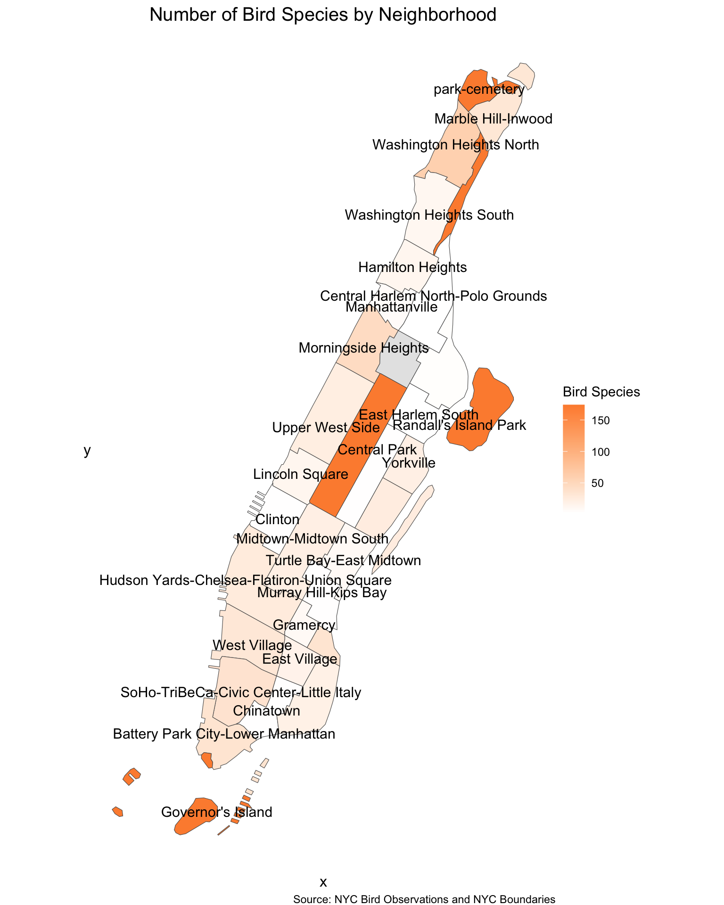
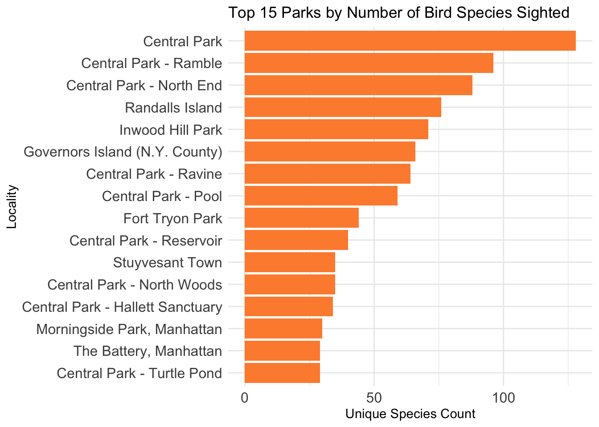
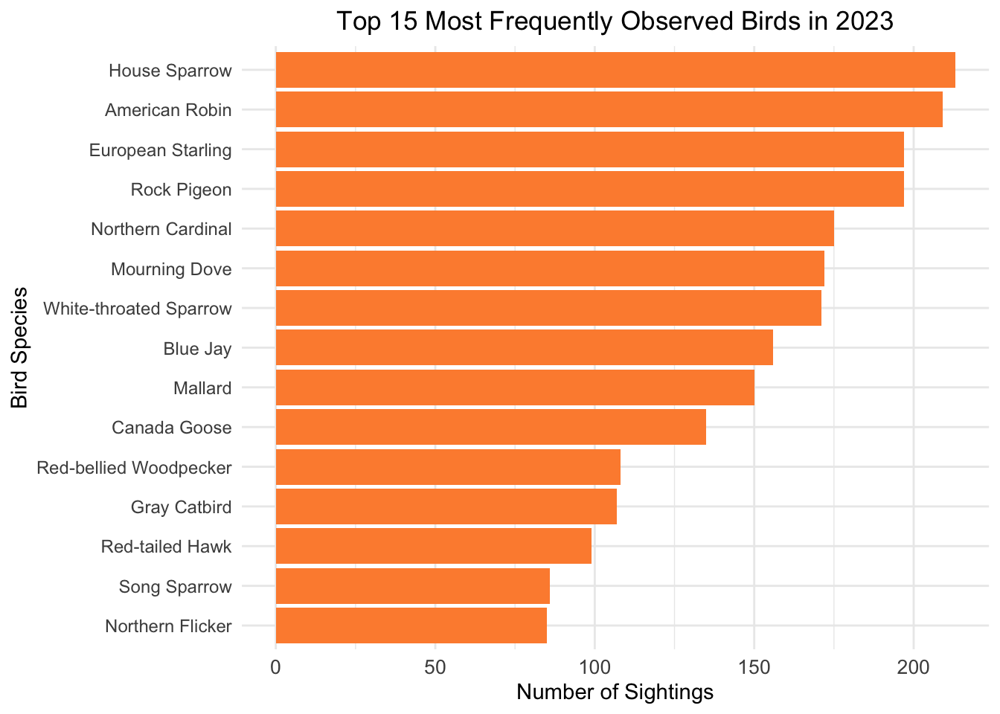
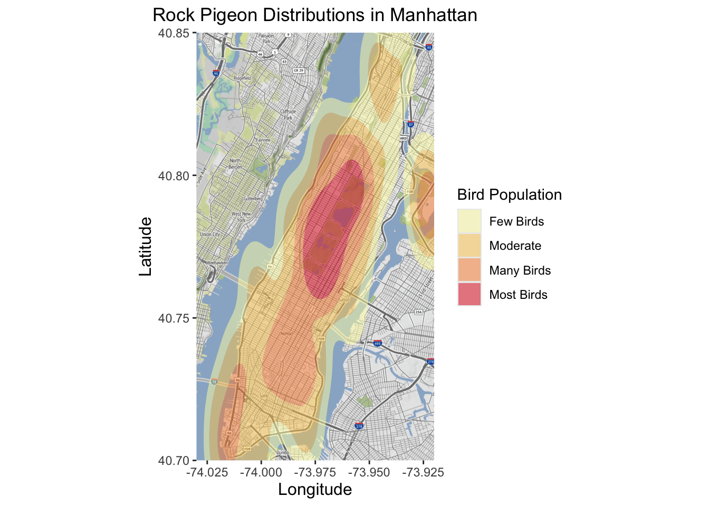

3 Results
If you are a bird enthusiast who lives in Manhattan, you may wonder where to see birds in the city. Where are the birds distributed? What time do they appear? What season in a year do they come out the most? What types of birds are there to see? Our analysis of the eBirds data will answer all of these questions, providing a practical guide to bird-sighting in the city.
3.1 Where to See the Most Birds?
Manhattan is made up of multiple neighborhoods, each with its distinct greenspace, population density, biodiversity, and bird-diversity. With that in mind, we want to see which neighborhood has the most birds.
3.1.1 Bird Distribution
Looking at this map, it is pretty obvious that birds are clustered around the oval-shaped area in the center of Manhattan, which happens to be Central Park. Central Park provides natural habitats for a diverse variety of birds to live in. Other areas that have the many birds are Randall’s Island Park, Lower Manhattan due to the fact that these neighborhoods have more greenspace.

Taking a closer look at the bird distribution in each neighborhood, the pattern becomes more obvious. Birds like to live in parks. Central park, Inwood Hill Park, and the Governor’s Island have higher number of bird species, with around 200 species. On the other hand, the lighter regions are urbanzied neighborhoods like midtown Manhattan and uppereast areas where bird diversity is lower.
3.1.2 Number of Bird Species in Parks
We want to go in more detail to see where in the park are birds mostly seen. After all, parks such as Central Park is so large that it would take a day to walk from the southern end to the northern edge. We plotted a horizontal bar chart indicating the types of birds sighted at specific locations, mainly parks in Manhattan.

As shown in the bar chart, Central park and its specific areas including the rambles and north end are the top locations for unique bird sightings. Central Park provides the most diverse habitats favorable for bird populations. Besides Central Park, Randalls Island, Inwood Hill Park, and Governors Island are also great spots for bird-watching, contributing to bird diversity and sightings. Still, among the top 15 locations, 9 locations are within Central Park. Therefore, we want to focus the rest of the Part I observation to the bird sighting patterns of Central Park.
3.1.3 Unique Bird Species Sightings in Central Park
The density plot shows the spatial distribution of unique bird species observed in Central Park. The higher density of unique bird sightings are represented by orange and red hexagons. We can see that the highest density of unique bird species appear around the latitude ~40.795 and longitude ~-73.955 and latitude ~40.772 and longitude ~-73.972. They represent some specific hotspots within the park where bird diversity is most prominent: The Great Lawn, Sheep Meadow, jacqueline kennedy onassis reservoir, and North Woods. Bird enthusiasts can simply input these pairs of latitude and longitude in their maps to determine where to go and enjoy birds in Central Park.
3.1.4 Conclusion of Bird Location
Therefore, from the location perspective, we inspect the bird sighting patterns in the different Manhattan neighbors, various Manhattan natural locations, and specifically Central Park. We wish this analysis can help bird lovers in Manhattan find their optimal place to observe birds.
3.2 What types of birds are there to see?
In this section, we will try to provide more information regarding the specific species observations, considering that people might be interested in catching specific bird species,
3.2.1 Common Birds

House Sparrow and American Robin are the most frequently observed bird species, with over 200 observations each. European Starling, Rock Pigeon, and Northern Cardinal, also have a wide presence in Manhattan. Therefore, beginning birdwatchers or casual bird lovers can start with species that are abundant in Manhattan. Maybe you can snap a photo of a blue jay on your way back home.

If you want to see a blue jay, go to Central Park. They clustered around Sheep Meadow and North Meadow. If you want to see a pigeon, however, they are everywhere. The bird population density map illustrates the distributions of three types of species. Central Park has the highest number of most types of birds. Other birds like rock pigeons and house sparrows are spread out throughout the city.
3.2.2 Rare Birds

Rare birds like Great Horned Owl and Yellow-billed Cuckoo are only spotted in Central Park. So if you want to see some rare birds in Manhattan, try your luck at Central Park.
3.2.3 Conclusion of Bird Species
The most common birds are house sparrow, american robin, european starling, rock pigeon, and so on. These types of birds are present throughout the city. Rare birds like owls and cuckoos are only seen in Central Park.
3.3 When to See My Birds?
Birds aren’t active all day like your local seven-eleven. Sometimes they hide in the trees and sometimes they are sleeping. A few birds have migratory patterns that make them not present during the winter. In this section we will explore what time and what month of the year to see which types of birds.
3.3.1 Which Month to See The Most Birds
We first draw a simple line plot showing the monthly situations of the number of bird species sighted.
From this graph that displays the monthly unique bird species, we can see that May has the highest diversity of unique bird species observed, indicating that it might be the peak time for birdwatching. September and October also show a notable increase in bird diversity. These months might correspond to the birds migration periods. On the other hand, July, December, and February exhibit lower diversity, possibly as a result of their more extreme weather conditions, whether it is too hot or too cold for birds. Therefore, the graph can provide relative information for bird enthusiasts to choose the appropriate time to go out doing birdwatching.
3.3.2 Time Throughout the Day
Next, we want to know which species are active at what time in the day.
The faceted bar graph shows the time the six most common birds are spotted throughout the day. They are most frequently spotted around 8 am, when you just get out of bed and ready to go to work. Gradually, they are less spotted throughout the day. When the night falls, the birds are not sighted very often. After 11 pm, no birds can be seen.
3.3.3 Time and Season
Combining previous results, we want to explore what time in which season should we do bird-sighting. The graph below shows that Dawn at Spring is the best time to observe birds.
# A tibble: 4 × 3
season common_name sightings
<fct> <chr> <dbl>
1 Spring European Starling 1075
2 Summer European Starling 348
3 Fall European Starling 262
4 Winter European Starling 327
Spring and Fall are the best seasons to see the most variety of birds. Spring shows the highest unique species sightings across all time interval, particularly during dawn (5:00-8:00) and early morning (8:00-10:00). From another perspective, across all seasons, early morning (8:00-10:00) consistently shows a higher observation of unique bird species, making it potentially the best time for birdwatching. This makes sense since most birds are more active during cooler hours right after sunrise. Besides early morning, dawn (5:00-8:00) also is quite fruitful in Spring and Fall particularly, since migratory stopvoers and feeding activities often happen during these times. However, evening (18:00-21:00) has the lowest species observations across all seasons, reflecting reduced bird activity as they settle for the night. Hence, based on this graph, we can suggest bird lovers that early morning should be the ideal time for birdwatching, and dawn would also not be a bad choice for spring and fall. For all seasons, bird lovers should definitely avoid evenings if they feel like going out to observe birds.
3.3.4 Conclusion of Time of Bird Sighting
Therefore, by plotting the monthly unique bird species sighting graph, the time series graph, and the seasonal graph by time interval, we hope to give bird lovers more insights into when they can observe the greatest diversity of birds, so they won’t pick the wrong time to do bird sighting and become disappointed as a result.